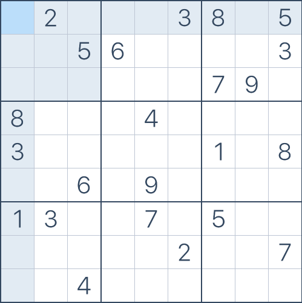

I was bored over summer break and decided to play some Sudoku. Turns out i'm not very good at it; so I made this.
My approach: go through all the empty spaces in the grid, and keep trying numbers till we have a valid insertion. Then, i'll go on to the next one and repeat the process. If we get to a point were no numbers are valid, we go back to the previous inserted number and change it to the next possible number. Then go back to the next one.
Example:

This is a 9x9 board: board size is 9
Sudoku elements:
0 2 0 0 0 3 8 0 5
0 0 5 6 0 0 0 0 3
0 0 0 0 0 0 7 9 0
8 0 0 0 4 0 0 0 0
3 0 0 0 0 0 1 0 8
0 0 6 0 9 0 0 0 0
1 3 0 0 7 0 5 0 0
0 0 0 0 0 2 0 0 7
0 0 4 0 0 0 0 0 0
This will return something like this:
Your Board:
_ _ _ _ _ _ _ _ _
| 0 2 0 | 0 0 3 | 8 0 5 |
| 0 0 5 | 6 0 0 | 0 0 3 |
| 0 0 0 | 0 0 0 | 7 9 0 |
_ _ _ _ _ _ _ _ _
| 8 0 0 | 0 4 0 | 0 0 0 |
| 3 0 0 | 0 0 0 | 1 0 8 |
| 0 0 6 | 0 9 0 | 0 0 0 |
_ _ _ _ _ _ _ _ _
| 1 3 0 | 0 7 0 | 5 0 0 |
| 0 0 0 | 0 0 2 | 0 0 7 |
| 0 0 4 | 0 0 0 | 0 0 0 |
_ _ _ _ _ _ _ _ _
The solved puzzle should be printed:
Solved in 2 milliseconds!
_ _ _ _ _ _ _ _ _
| 4 2 7 | 9 1 3 | 8 6 5 |
| 9 1 5 | 6 8 7 | 2 4 3 |
| 6 8 3 | 2 5 4 | 7 9 1 |
_ _ _ _ _ _ _ _ _
| 8 7 1 | 3 4 5 | 6 2 9 |
| 3 4 9 | 7 2 6 | 1 5 8 |
| 2 5 6 | 8 9 1 | 3 7 4 |
_ _ _ _ _ _ _ _ _
| 1 3 2 | 4 7 9 | 5 8 6 |
| 5 9 8 | 1 6 2 | 4 3 7 |
| 7 6 4 | 5 3 8 | 9 1 2 |
_ _ _ _ _ _ _ _ _
Try it yourself: